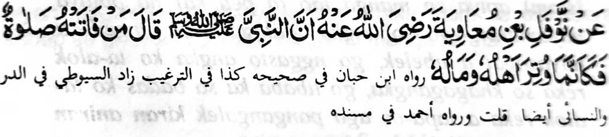

Miyaka thitayan ko Naufal Bin Muawiyah (Radhiallaho Anho) a mata-an a Pitharo o Nabi (Sallallaho Alaihi Wasallam), "Sa tao a makalepas sa isa bo a Sambayang na lagid o ba miyada so langon o ta-alok iyan ago miya-antiyor so langon o tamok iyan."
So Sambayang na aya lalayon a kapekhalepas iyan na odi matatago so tao si-i ko manga ta-alok iyan na zisi-i sekaniyan ko kapezaloba-a niyan ko tamok. Miyatharo angka-iya Hadith a so tanto a kalapis a khaparoli o tao na daden a mbida-an niyan ago so kapolang o langon o ta-alok ago so kaantiyor o langon o tamok. Aya ma-ana niyan, na opama ka makabagak tano sa Sambayang na ipemboko tano sa lagid o kapemboko tano opama ka mapolang so manga ta-alok tano ago mada so langowano pathamo-tamokan tano. Opama ka aden a tomapa-os reketano a tao a kasasangarigan a aden a manga tolisan si-i sangkoto a lalan a ipagokit tano, a ron petholisa so manga tao ago pembono-on siranon igira gagawi-i, na sarowar o ba aya poso tano na poso a arimao a badi inengka-an tano angkoto a tapaos a ba tano makarao mokit sangkoto a lalan apiya kadaon-dao. Tanto a piyakamemesa a oman-oman tanoden tapa-osan o Rasulollah (Sallallaho Alaihi Wasallam) ago paparatiyaya-an tano a sekaniyan na titho a sogo o Allah, ogaid na di tano phamakinegen so manga tapa-os iyan na lalayon tano den phelepasen so thondo-tondog a manga Sambayang.